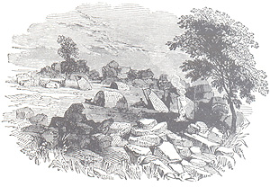

|
home | franco frescura | architecture | urban issues | lectures | graphic work | postal history | historical archive
FOLK ARCHITECTURE IN TRANSITION: A Southern African Case StudyFranco Frescura ABSTRACTThis paper is the result of Doctoral research conducted in the Department of Architecture, University of the Witwatersrand, between 1978 and 1985 and is a summary of its major findings. At its onset the programme set out to study the indigenous rural dwelling forms of southern Africa since 1822. It examined the physical, social and economic factors which gave rise to a number of different regional styles of construction. It then traced the arrival of white farmers, missionaries, traders and military to the subcontinent and the resultant changes which occurred in local architectural patterns. These developments were analysed in the context of potential white-black cross-cultural pollination through the use of a number of historical and current case studies. The conclusions were that although a number of alterations in the local built environment could be attributed directly to the arrival of white immigrants to the region, such changes were both manipulative and pragmatic. As such they could not be defined as being of a cross-cultural nature. The study then focused upon the region's larger settlement units which were defined and analysed. As a result it was realised that indigenous homesteads are governed by a cognitive and unspoken language which reflects the people's social structures, inheritance hierarchies, spiritual beliefs and cosmological attitudes. Such language appears to have remained little changed since 1822. It was thus concluded that whilst the form of the southern African dwelling has indeed undergone a number of important modifications since the last century, these do not necessarily extend to the cultural core of the local rural built environment. INTRODUCTIONVernacular, or folk architecture as it is sometimes referred to, derives many of its forms, textures and aesthetics from its use of the found material: the timber, stone, grass and clay quarried from its immediate environment. In the past this has led many researchers into rationalising such architecture in purely geographical and climatic terms. Forde stated that "The tools, utensils, houses and indeed the greater part of the material equipment ... will show a direct relation ... to the available resources." (Forde, 1948) Because these studies tended to focus largely upon examples drawn from environmental extremes such as the Eskimo of North America or economic sub-cultures such as the San of southern Africa (Fitch and Branch, 1960), the conclusions they arrived at were somewhat limited in scope and failed to find relevance in a wider variety of cultural contexts. The limitations of such an approach were exposed in the 1970's with the publication of a series of multi-disciplinary studies which rejected environmental predeterminism and laid greater emphasis upon factors of a social and cultural nature (Oliver, 1968, 1971 and 1975). Amos Rapoport's seminal book "House Form and Culture", published in 1969, concluded that: "The decision as to what form the house shall take is made on socio-cultural grounds - way of life, shared group values, and "ideal" environment sought." (Rapoport, 1969) and viewed materials and technology as peripheral modifying factors. Despite the fact that these works recognised the regional aesthetics of man's habitat, his dwelling forms, building textures and decorative motifs, their tendency towards creating cultural stereotypes merely had the effect of substituting a new set of predeterminisms for the old. Subsequent work by Rapoport, influenced by theorists in other disciplines such as Levi-Strauss (1968) and Hall (1959), has led him to explore the use of non-verbal communication in man's built environment (Rapoport, 1982). In southern Africa the study of vernacular architecture was, up to recent times, still heavily reliant upon regional and environmental models which, regrettably, have also been given more popular interpretation as cultural and ethnic stereotypes (Walton, 1956; De Jager, 1964; Van Der Waal, 1977). Much of this research project has, over the past nine years, been spent in examining the validity of such stereotypes in our indigenous built environment, in both historical and contemporary contexts. Its results stand in direct contradiction to most currently-held cultural models for the sub-continent. ENVIRONMENTAL FACTORS AS PRE-DETERMINANTS OF FORMIt is possible to gain a general if limited understanding of southern Africa's built environment through an analysis involving various geographical and environmental factors. These include the following:
The first involved primarily the distribution of timber-consuming termites over the subcontinent. It was found that a measure of localised architectural adaptation to such infestation, in the form of verandah dwellings, had occurred in some areas, most notably the northern Cape, Botswana and the northern Transvaal. However the distribution of wood-destroying insects did not coincide with any one particular dwelling form or building technology (Coaton, 1949). The impact of this component was therefore considered as being minimal. The second was based upon a popularly-held stereotype that the predominant form of indigenous dwelling built along the eastern coastal littoral was the grass beehive hut whilst that built in the interior plateau was in the form of a cone on cylinder. This idea was propounded as early as 1805 when Lichtenstein observed that: "The great differences observable between the two nations (Xhosa and Tswana), and which are chiefly to the advantage of the latter, consist in the more durable construction of their houses." (Lichtenstein, 1812 and 1815). More recently other writers have also espoused the same idea (Walton, 1956; Frescura, 1981) which may be found to have a measure of validity in the most general of senses. However subsequent research based upon archival and archaeological data (Frescura, 1985) has been able to show that hemispherical grass dwellings have been common throughout the southern African interior right up to the mid-nineteenth century (Illustration 1). From 1860 onwards this form began to be replaced by the cone on cylinder. The gradual phasing out of the grass dome in our rural culture over the last six generations should be attributed to diminishing building resources and the changing economic circumstances of indigenous farmers as well as to evolving cultural patterns. The last, based upon the availability of building materials and prevailing climatic conditions, provided, of the three, the most logical and comprehensive explanation of the indigenous built environment up to that point in time. As a result it became possible to derive eight major if overlapping regions of building technology, ranging from a grass savannah in the south to a wooded bushveld to the north and from an arid semi-desert in the west to a semi-tropical coastal belt to the east (Illustration 2). Despite this however it was again found that the stereotypes thus derived were valid only in the most general of cases. Also, when compared with previous historical case studies for the same geographical regions, it was discovered that this architecture did not remain constant but tended to evolve or change, often within a couple of generations (Frescura, 1981). It became obvious at an early stage of this project, therefore, that factors relating to the physical environment did not provide a constant and reliable guideline to the vernacular architecture of the region. They gave only partial answers to some questions on dwelling form and building technology and failed to explain a number of serious discrepancies which became increasingly evident in the model as this study progressed. ECONOMIC ACTIVITY AS A PRE-DETERMINANT OF FORMThis section of the study was based upon differences perceived to exist between the respective economic activities of hunter-gatherers, migrant pastoralists and sedentary pastoralist farmers of the southern African region up to the mid-nineteenth century. Each appeared to have developed its own distinct style of dwelling forms and building technologies and, to all intents and purposes seemed to provide a partial description of the local built environment. However it was soon found that, historically, the economic boundaries between the three were not clear-cut. A group of hunter-gatherers could gain cattle and become migrant pastoralists (Elphick, 1977); migrant pastoralists were recorded in some regions to have settled down to a life of sedentary farming (Peires, 1981); and pastoralist farmers were not necessarily bound to a sedentary life and hunting/gathering provided important supplements to their primary agricultural activities. Ultimately the indigenous rural communities of this country were forced into a fully sedentary agrarian economy as a result of the dispossession of black-owned farming land on the part of white immigrants that took place during the eighteenth and nineteenth centuries. Since 1925 the increasing pressures of a local migrant labour system and a coercive participation in the local capitalist cash economy have all but destroyed the rural peasant farmer as a viable force in the economy of the region with attendant results upon the architecture of his homesteads (Bundy, 1979). DWELLING FORM AS A MANIFESTATION OF CULTUREAlthough there is no doubt that a process of acculturisation has indeed occurred in southern Africa since the early 1800s between the indigenous black and the immigrant white populations, the exact nature and extent of this phenomenon must lie in some question. For one thing the major agents of cultural change - the military, the missionary, the government agent and the trader - all showed varying degrees of success in their efforts. The military, for example, played a powerful role in the politics of the region but neither sought nor exerted much influence beyond that point. The missionaries sought to use methods of strong moral coercion based largely upon Victorian values which in the long run bore them precious little fruit. The government agent, on the other hand, imposed a monetary hut tax which was not considered by many to be overly onerous and was easily accepted by the indigenous population, probably because it fell within the bounds of government already established by their own traditional leadership. Yet it was the need to send their young men into urban centres to earn the money for this tax that brought indigenous culture into contact with a capitalist cash and consumer economy and facilitated the subsequent task of both traders and, to a lesser extent, missionaries. In a general sense however all four agencies must be seen to be part of a larger interactive process, each supporting and creating opportunities for the other (Frescura, 1985).  When applied to the built environment however an analysis of this process revealed some startling results.
The adoption of European building forms and techniques should therefore not be seen to be part of a process of culture transmission between the two groups so much as a deliberate and pragmatic borrowing of the one from the other. Square- plan dwellings have neither spread widely nor, in most cases, have they supplanted their circular counterparts in rural areas. Rather they have been incorporated into the rural building tradition, widening and enriching its range of domestic forms. Their adoption occurred as a response to the increasing use of western furnishings by the rural indigenous community (Biermann, 1971) and not, as some would have it, as a blind borrowing for borrowing's sake (Illustration 7). The true "cultural" impact of such adoptions however, was only realised during the course of this project once a number of local and outwardly conflicting case studies were analysed. These revealed that although strong connotations of group identity could be and often were attached to either dwelling form, building technology or decorative motif, enough examples, both historical and current, existed to show that such factors could not consistently be assigned values of "cultural" or "ethnic" identity. It is true that they all contributed to the creation of regional and group stereotypes but, much like the environmental and economic models derived earlier, could not be relied upon to provide consistent and accurate descriptions of the indigenous built environment. THE MATABELE: A CASE STUDY IN TRANSITIONA good case in point is that of the Kumalo, a small Nguni clan originating from northern Zululand who, as the result of internal political tensions within the Zulu kingdom, migrated into the Transvaal in 1822 under the leadership of their chief, Mzilikazi. Although the group was initially small, numbering an estimated 300 warriors with their families, they were also armed and trained in the Zulu manner. They were thus easily able to defeat and absorb a number of smaller clans who barred their march northwards. They quickly earned for themselves a reputation as courageous and skilled fighters as well as the name "Ndebele" or "Matabele" as they were to call themselves later on. By the time they had settled in Matabeleland, the western region of present-day Zimbabwe, in 1837, they numbered an estimated 5000 warriors (Wilson and Thompson, 1975). During this brief fifteen year period Matabele society underwent four major relocations, taking them through a number of distinct environmental and climatic zones. Originating in 1822 from a grass-rich area of northern Zululand, in 1823 they halted in the bushveld of the upper Oliphants river, bordering upon the timber-rich Lowveld; 1825 saw them in the mixed bushveld/grassveld region near present-day Pretoria; in 1832 they settled in the semi-arid bushveld of the Marico valley; and in 1837 they finally made their homes in the mopane veld of western Zimbabwe. Throughout this time and right up to 1897, seventy five years later, they continued to build their dwellings in the form of a hemispherical beehive dome, using the same technology, domestic structures and settlement patterns as they had done previously in northern Zululand. It was only once their political ascendancy over the neighbouring Shona was broken in two successive wars with the British settlers in 1893 and 1897, that they appear to have abandoned their attachment to the beehive form in favour of the cone on cylinder, a form better suited to the physical realities of their region (Child, 1968). The case of the Matabele is interesting for a number of reasons. For one, by the time they had reached the Marico river valley of the western Transvaal, in 1832, they had ceased to be predominantly Nguni. It is true that they had been joined from time to time by other Nguni refugees from Zululand, but these groups were generally small and the bulk of their numerical expansion was owed to the various Sotho and Tswana tribes they encountered in the Transvaal. The status of these recruits varied. Some enjoyed the status of full allies; others were conquered and their young women taken as concubines whilst their young men were eventually incorporated into Matabele regiments as full warriors (Child, 1968). Thus a large proportion of the Matabele population in the Transvaal was not of Nguni origin, but rather came from rural backgrounds whose domestic architecture did include the knowledge and occasional use of beehive-type structures but was predominantly orientated towards the cone on cylinder. It would appear therefore that despite undergoing the trauma of four major relocations within a relatively brief period of time, the Matabele clung tenaciously to a dwelling form which was neither familiar to the majority of them nor could it have been practical in the physical surrounds they moved through. When we consider that the construction of their towns, described by Collins in 1831 as "a large kraal - or rather city, ... a collection of closely built houses two miles in length" (Baines, 1961 and 1964), must have involved vast amounts of material resources, a large proportion of which would have been carried on foot over some considerable distances, then it will be realized that such an achievement required a large amount of determination and an inordinate attachment to a perceived architectural tradition. It becomes clear therefore that the Matabele's retention of an architectural style, which lasted for nearly seventy-five years, runs counter to all the dictates of practicality and common sense and cannot be explained in simple environmental and social terms. The solution probably lies in the fact that, between 1822 and 1837, the Matabele deliberately sought to create for themselves an identity based upon the Zulu model. They called themselves "Zulu", their warriors dressed and fought like the Zulu, Zulu was their predominant language and their style of architecture, both in settlement form and dwelling type, conformed to the Zulu model. Dress, of course could be copied; military tactics learnt and emulated; Zulu is a dialect of Nguni, a language common to the entire eastern littoral; but architecture, particularly settlement pattern, is recognised by rural people to be a reflection of their entire cosmology, their economic system, social structure, inheritance hierarchy and religious practices and is thus their most manifest banner of group identity. It could be for this reason, therefore, that the beehive dwelling form was adopted and clung to so tenaciously for nearly four generations, seemingly against powerful odds. The reason why a "Zulu" identity should have been so carefully cultivated by the Kumalo is a little more difficult to establish. At a superficial level it could be read to have been no more than a simple psychological device which exploited the fearsome reputation enjoyed by Zulu regiments under the leadership of Shaka. This may well have been possible but such a theory ignores the fact that the Zulu leadership under both Shaka and Dingane showed a preoccupation with the presence of a second and alternative "Zulu" state on the highveld which bordered on paranoia. The answer therefore probably lies in the concept of a political identity. The original Zulu clan was a small group whose number in 1816 can hardly have exceeded two thousand persons. By 1819 a wider Zulu identity encompassed most Nguni along the coastal belt from the Pongola in the north to the Tukela in the south. Under these conditions the term "Zulu" ceased to have connotations of clan and became identified with the political ideal of a larger Zulu state. Thus when Mzilikazi fell out with Shaka, ostensibly over the question of how to divide the spoils of a military victory, what was at issue in reality was not the future of a herd of cattle but the political leadership of this state. The establishment of an alternative "Zulu" presence in the southern African interior was not simply the work of a petty chief who had emigrated and was making good elsewhere, but it was perceived to stand as a challenge to the very identity of a "Zulu" state. It is not known whether the differences between Shaka and Mzilikazi were based on a simple leadership struggle or upon more fundamental ideological issues. We do know however that Shaka's Zulu kingdom was predominantly Nguni and hence of a limited and regional nature. Mzilikazi's domain on the other hand encompassed in its time Nguni, Sotho/Tswana and Shona alike. It is possible to postulate therefore that, of the two men, it was Mzilikazi who was endowed with the wider vision. It is not known whether this envisaged the establishment of a black southern African state but his own power base was established on a broader regional front than Shaka's and must therefore be perceived as a forerunner to such an ideal. If this interpretation is indeed correct, then it might also explain why the beehive dwelling form, so symbolic of their own group identity, was abandoned after 1897 when Matabele political ascendancy in their region was crushed by the white colonists of what was to become Southern Rhodesia. SETTLEMENT FORM AS A MANIFESTATION OF CULTUREThe Matabele example is but one of a number of similar case studies which arose in the Southern African context. All of them indicated that neither dwelling form nor decorative motif were reliable indicators of group identity and cultural values, both being open to pragmatic manipulation. Consequently the emphasis of this project began to fall increasingly upon the study of the use of space within the larger homestead grouping. Anthropologists had realised some time ago that indigenous settlements in southern Africa were a reflection of the social hierarchies, inheritance patterns and political structures of the societies concerned (Junod, 1962; Monnig, 1967, and others). However certain material differences existing between the settlement forms of one region and the next had led some scholars into the belief that these were representative of more fundamental schisms within rural society as a whole (Erasmus, 1975, and others). Such beliefs, although never fully documented on a wider comparative basis, also tended to be supportive of certain white social and political prejudices and thus went largely unquestioned until comparatively recent times. The findings of this project stand in direct contradiction to most if not all such preconceptions. They revealed that rural settlement patterns are governed by a cognitive and unspoken language which involved not only the social, political, economic, sexual, inheritance and religious values of the people concerned but in many ways also acted as a mirror to their cosmological beliefs as a whole. As such therefore it was concluded that the usage of space within the settlement represented a more reliable guideline to cultural pattern than any of the other models derived and tested to date. When applied to a wide range of examples, it became evident that the southern African region is the home to two major cultural groupings - the Venda, a small minority inhabiting the northern reaches of the Transvaal and the larger Nguni/Sotho/Tswana grouping, or virtually the remaining indigenous population of southern Africa. A brief overview of the structural principles governing the settlement patterns of these two groups makes for some interesting comparisons. The Nguni/Sotho/Tswana model (Illustration 8) follows a circular form enclosing a central cattle byre surrounded by individual dwelling units (as among the Nguni) or by various homesteads (as among the Sotho/Tswana). The main entry is located at the lowest point of the settlement which, if possible, faces towards the east or north-east. The dwelling of the Head Wife or Mother, the Great Hut, which is also the accepted residence of the family head, is sited on axis with the entrance at the opposite end of the circle. The dwellings of second and subsequent wives are then placed alternatively on either side of the Great Hut in descending order of importance. The imaginary axis thus created serves to divide the extended family group of a polygamist into Left and Right Hand houses, thus establishing a hierarchy between the House of the Head Wife, who also bears the family heir, and the Second House which acts as her support group. A similar axis is also perceived to exist within each individual dwelling unit, dividing it into "Male" and "Female" areas. The huts of children and of visitors are located in the sector of the circle closest to the gates. Although the homestead as a whole comes under the titular leadership of the family head, the various dwelling units fall under the control of the individual wife concerned and, having no formal place of his own, the husband is expected to reside with each wife in turn. Every wife has her own separate cooking hut located behind the sleeping unit together with her own granaries and food stores. However supplementary granaries which fall under the control of the men are located in pits hidden inside the cattle byre and are available, under certain contingencies, to the group as a whole. The cattle byre is generally acknowledged to be an area of male activity and is also associated with burial and the performance of religious rites. In contrast the typical Venda homestead (Illustration 9) does not follow a circular pattern, the various dwelling units being laid to follow the prevailing site contours. The cattle byre is not associated directly with the settlement but is located to one side of it. Unlike the Nguni/Sotho/Tswana model, Venda social hierarchies are governed by a concept of "front-and-back" and "top-and-bottom" which distinguishes between husband and wife or wives, parents and children, chief and people. No formal concept of "left and right" was recorded in the case of either Venda settlements or of individual dwellings. The husband/father has his own separate quarters to the rear of the homestead behind those of the wives and children. Like the Nguni/Sotho/Tswana, each wife controls her own living and work space but, in a polygamous marriage, she is expected to reside in her turn in the husband's quarters for a specified length of time. The distribution of wives' quarters is governed by considerations of common convenience and functionality and only the Head Wife's residence is given recognition by virtue of the fact that the main entrance path will lead to her work areas. Access to a Venda homestead, as well as social etiquette, is governed by a dis-axiality of approach which can best be described as a "zig-zag" path. Burial and religious ritual are usually associated with an area to the rear of the father's quarters. It should also be pointed out that some evidence does exist for the fact that the KhoiSan, the migrant herders and hunter/gatherers who at one stage populated the greater part of the Cape and southern OFS, may have represented in the past a third distinct cultural grouping in their own right (Illustration 10). Unfortunately it has not been possible to substantiate this hypothesis through current field research. CONCLUSIONSWhen viewed in the larger context of culture transmission it was realised that although a white presence in southern Africa had indeed wrought some obvious changes to the local built environment, their nature made it impossible to assign "cultural" values to them. On the contrary it became clear that what alteration had occurred to local architecture was due to a process of deliberate and pragmatic assimilation done in the normal course of cultural growth and change. On the other hand, archival and current research in the field has indicated that although rural settlement patterns have undergone some changes over the past eight to ten generations, the basic language of homestead layout has remained essentially unaltered. This was demonstrated on numerous occasions in various parts of the country when informants were able to interpret the spatial functions of settlements abandoned, in some instances, for over a century. In view of the fact that settlement patterns are a direct reflection of the social, economic, religious and political activities of rural man, it was concluded that the basic value structures of southern African indigenous architecture since 1822 have remained essentially unchanged from exposure to outside influences. POSTSCRIPTThis paper was originally presented under the title of The Indigenous Built Environment of Southern Africa - A Study in Transition, at the International Association for the Study of People and their Physical Surrounds, International Conference on Environments in Transition, Haifa, Israel, 7-10 July 1986. It was subsequently published as Folk Architecture in Transition: A Southern African Case Study. SA Journal of Art and Cultural History, Vol 1, No 3, 263-271 (1987). BIBLIOGRAPHYBAINES, Thomas. 1961 and 1964. Journal of Residence in Africa, 1842-1853. Cape Town: Van Riebeeck Society. LIST OF ILLUSTRATIONS
Copyright @ francofrescura.co.za
|